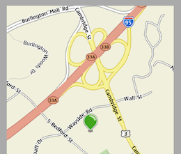
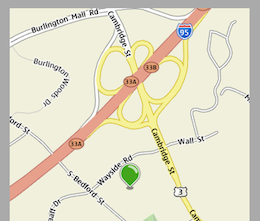

HTML5's Geolocation API enables web applications a simple, consistent cross-device interface to gather information about users' location, based on GPS or network signals. This section shows how to extract location and present it within a simple map interface.
The Geolocation API
Location data is available via a single API call. The getCurrentPosition method runs an asynchronous callback function once location is detected:
navigator.geolocation.getCurrentPosition(getCoordinates); function getCoordinates(position) { var lat = position.coords.latitude; var lon = position.coords.longitude; var time = position.timestamp; // equivalent to Date object // process coordinates }
Before the callback executes, the browser asks users permission to use their location data, for each session and domain.
Note: The Geolocation API exposes the location of mobile users, information that potentially compromises their privacy. Unless an application ckearly offers location-sharing features, users who opt in should be able to expect their personal data to be treated with the same confidence and sensitivity as passwords and credit card data.
Most applications simply extract latitude and longitude from coords, both values expressed as &plumin; 90° or &plumin; 180°. The coords object also features an accuracy property indicating the number of meters considered a margin of error. Additional properties may be available for altitude and altitudeAccuracy, also expressed in meters, but these do not have a wide application and would only be available on some GPS-enabled handsets.
Fallback Behavior
The getCurrentPosition() method accepts an optional second argument specifying an error fallback. The following example accounts for various problems that might keep the application from working. An object detection test responds if for older browsers that do not support location:
if (navigator.geolocation) { navigator.geolocation.getCurrentPosition(successCallback, errorFallback); } else { // Browser does not support HTML5-based location. }
An additional error callback responds differently when users decide not to share their location. Depending on the importance of location to the application, it may then be appropriate to prompt users if they want to store that decision as a preference:
function errorFallback(err) {
if (err.PERMISSION_DENIED) {
// User does not consent to sharing location.
}
else {
// indicates a problem beyond the user's direct control
}
}
function successCallback(position) {
var lat = position.coords.latitude;
var lon = position.coords.longitude;
// process coordinates
}
The following errors may occur:
- 1 PERMISSION_DENIED indicates the user rejects the location request.
- 2 POSITION_UNAVAILABLE means the location mechanism is unavailable. Perhaps no GPS satellite could be found, or not enough network signals are available to perform triangulation.
- 3 TIMEOUT means the location service may be available, but the request took too long.
- 0 UNKNOWN_ERROR refers to anything else that might happen.
The timeout interval is configurable. The getCurrentPosition method accepts a third argument, consisting of additional options stored in an object. The following makes the location request wait at least five seconds before timing out:
navigator.geolocation.getCurrentPosition(successCallback, errorFallback, { timeout: 5000 });
The following parameters are available:
- timeout is the minimum number of milliseconds before which a location request throws a TIMEOUT error.
- maximumAge is the maximum number of milliseconds for which location requests might rely upon on a previously cached value. It may even be set to Infinity.
- enableHighAccuracy is a boolean that prompts the positioning system to produce more accurate values than the default. This option would likely be limited to applications targeted to pedestrians using a narrow range of GPS-enabled handsets.
Tracking Location
Once an application has calculated the user's location, it might respond by providing contextual information, such as location-specific search results or suggestions for nearby points of interest. It may respond even better if it tracks the user's location over time. For example, suggestions for points of interest may be more relevant if they're in the user's general direction of travel. Some suggestions may likewise be more appropriate for pedestrians than for people traveling in vehicles.
To gather this information, use the watchPosition() method. It resembles getCurrentPosition(), but executes indefinitely as position changes are detected. It uses the same interface, but returns a numeric key when invoked:
var process = navigator.geolocation.watchPosition(successCallback, errorFallback, { maximumAge: 10000, timeout: 60000 });
Much like JavaScript's standard clearInterval() function, you supply this key to the clearWatch() method when you need to terminate the process and stop tracking the user's location:
navigator.geolocation.clearWatch(process);
This example specifies two additional options. The timeout option sets the threshold before which a network delay causes the fallback function to execute. In this case, it is extended to a full minute. After the application initially determines location, users may briefly wander out of range of network signals, in which case the application shouldn't terminate abruptly.
The maximumAge option effectively reduces the data's level of detail, in this case producing new location values only every 10 seconds. Frequent location requests taxes the battery. This option allows the application to reduce the number of requests to suit its needs.
Note that the callback specified by watchPosition still executes even if its position values are cached. The following example maintains a local path array of tracked locations, but filters out redundant instances of the same location:
var app = new Function(); app.path = new Array(); var id = navigator.geolocation.watchPosition( successCallback, errorFallback, { maximumAge: 10000, timeout: 60000 } ); function successCallback(position) { var latitude = position.coords.latitude; var longitude = position.coords.longitude; var len = app.path.length; // ignore redundant cached values: if ( len && ( latitude == app.path[len-1].lat ) && ( longitude == app.path[len-1].lon ) ) return false; // otherwise add new values: app.path.push({"lat" : latitude, "lon" : longitude}); }
The example Tracking Location maintains a local cache of the user's whereabouts, which can be used to calculate overall speed and direction of travel. The API also yields this data, but only based on a comparison between the current location and the most recently cached location:
- The position.coords.speed property is expressed in meters per second.
- The position.coords.heading property represents the current direction of movement in degrees, measured clockwise relative to due north.
Mapping
Once the user's position is known, information is usually presented within a map. Many web-based mapping APIs are available to choose from, many of which feature touch-enabled panning and zooming. This section briefly outlines the basic capabilities of the Ovi Maps API.
To enable maps, on a page add the following script before any others on the page:
<script src="http://api.maps.ovi.com/jsl.js" type="text/javascript"></script>
Displaying the map requires you to place an empty element on the page, preferably styling it so that it fills the screen:
<section id="map"></section>
The following draws a map within the element, centered around the supplied coordinates:
function renderMap(lat, lon) { var map = new ovi.mapsapi.map.Display(document.getElementById('map'), { 'center': [lat, lon], // center coordinates 'zoomLevel': 15, // default level suitable for pedestrians }); }
By default, maps renders statically, but you can add components to make them interactive:
function renderMap(lat, lon) { var map = new ovi.mapsapi.map.Display(document.getElementById('map'), { 'center': [lat, lon], 'zoomLevel': 15, components : [ new ovi.mapsapi.map.component.Behavior(), // new ovi.mapsapi.map.component.TypeSelector(), // new ovi.mapsapi.map.component.ZoomBar(), // new ovi.mapsapi.map.component.Overview(), // new ovi.mapsapi.map.component.ScaleBar() ], }); }
When targeting mobile users, you should be selective in which of these components to deploy. For example, the Behavior component allows users to drag the map to explore places not visible within the initial area displayed. If you display the map along with other information within a much larger page, users may become confused when panning within the map produces different results than panning vertically within the page.
The other disabled components produce small overlays that crowd the mobile screen and are often difficult to manipulate on mobile browsers. The TypeSelector provides controls switching from the default street map to less legible satellite or terrain maps. The ScaleBar displays a legend noting the range of distances. The Overview produces a small map inset displaying surrounding areas. The ZoomBar presents a slider to control zoom level.
The following specifies a marker and places it on the screen:
var marker = new ovi.mapsapi.map.StandardMarker([lat, lon]); map.objects.add(app.marker);
The following customizes the marker icon:
var marker = new ovi.mapsapi.map.Marker( [lat, lon], { icon: "img/icon_geo_pin.gif" } );
The following example shows a simple mapping interface that marks the user's location:


When the handset is placed on its side, the map fills the entire screen. In portrait orientation, large touch icons appear that implement the zoom feature independently of controls supplied by the API, or its support for multi-point touch gestures. To accomplish this, the controls call the setZoomLevel method directly on the map element:
map.setZoomLevel(15);
See the Ovi Maps Web API page for information on performing searches, plotting routes, and placing custom overlays.
XXX 8.5 Loc?
The user's location is available via the Geolocation API. Geographic coordinates are available via asynchronous callback function:
navigator.geolocation.getCurrentPosition(successCallback, errorFallback); function successCallback(position) { var lat = position.coords.latitude; var lon = position.coords.longitude; var time = position.timestamp; // same as Date object // process lat/lon coordinates }
For each session and domain, users are asked if they want to share their location. If the user declines, it is available as a PERMISSION_DENIED error within the second callback function. (Other potential errors beyond the user's control are POSITION_UNAVAILABLE (positioning mechanism unavailable), TIMEOUT, and UNKNOWN_ERROR.)
function errorFallback(err) {
if (err.PERMISSION_DENIED) {
// User does not consent to sharing location.
}
else {
// indicates a problem beyond the user's direct control
}
}
The timeout, 5 seconds in this case, can be passed in as an additional object's parameter:
navigator.geolocation.getCurrentPosition( successCallback, errorFallback, { timeout: 5000 } );
The getCurrentPosition method calculates location only once. If it's important to track the user's progress over time, the watchPosition() method uses the same interface. Passing the process it returns to clearWatch() cancels location-tracking.
// start watching user's location: var process = navigator.geolocation.watchPosition(successCallback, errorFallback, { timeout: 60000, maximumAge: 10000 }); // stop: navigator.geolocation.clearWatch(process);
The maximumAge delays each sampled location, in this case once every 10 seconds. Increasing the timeout allows the user to briefly go out of range without causing an error.
Example: Mapping
This simple example uses the Ovi Maps API to mark the user's location on a map:
 
 To enable mapping, add this before any other scripts:
<script src="http://api.maps.ovi.com/jsl.js" type="text/javascript"></script>
Once lat and lon coordinates are available, you can fill in a large screen element:
var map = new ovi.mapsapi.map.Display(document.getElementById('map'), { 'center': [lat, lon], 'zoomLevel': 15, components : [ new ovi.mapsapi.map.component.Behavior(), ], });
This adds a marker to the map:
var marker = new ovi.mapsapi.map.StandardMarker([lat, lon]); map.objects.add(marker);